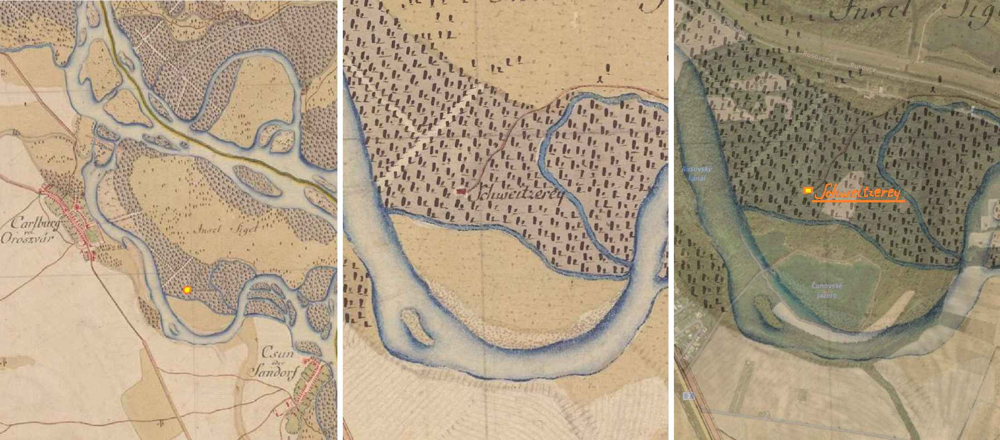
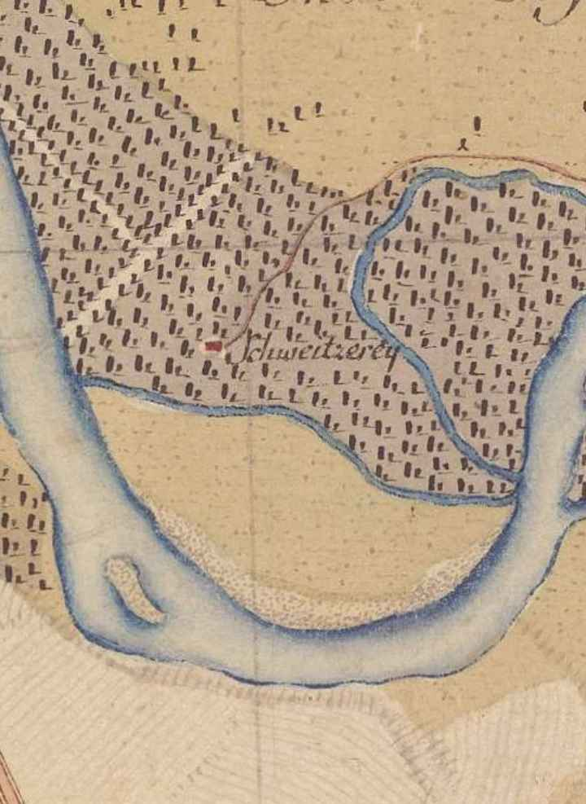
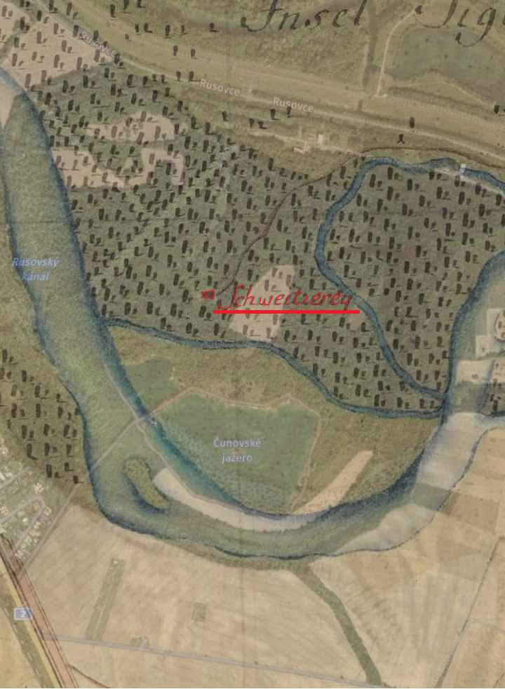
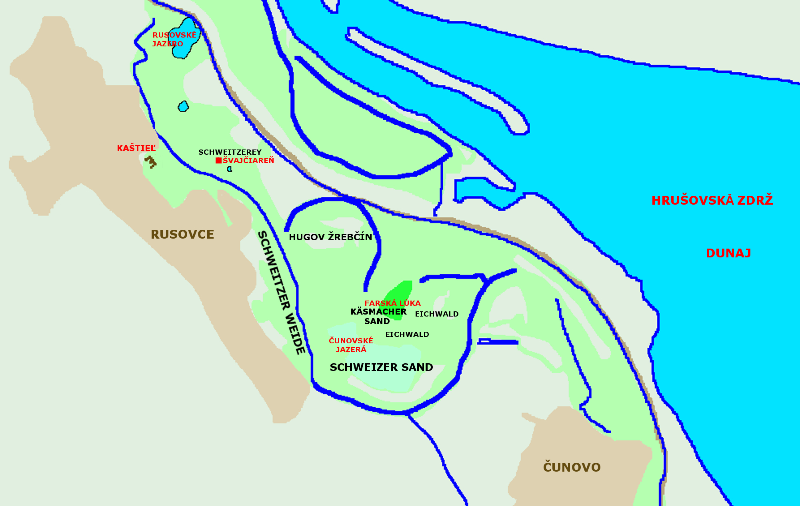
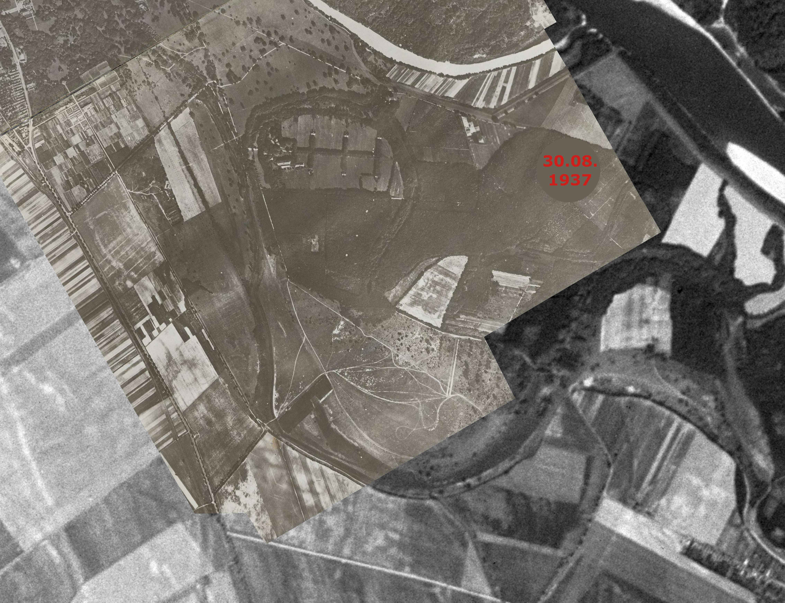
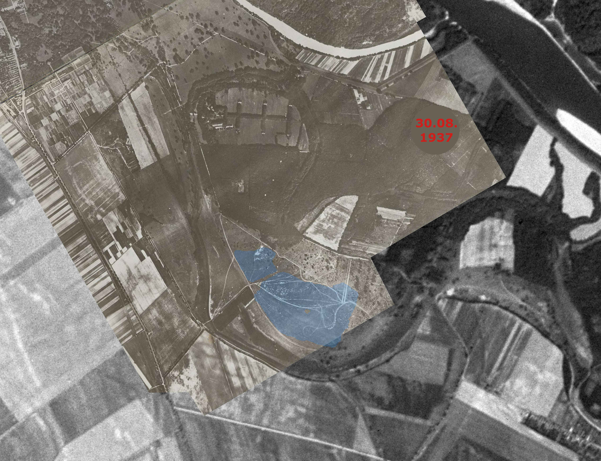

Veď to vôbec nijako nesúvisí. Či?
Skúsme načrieť do histórie a pozrieť sa čo bolo v oblasti Čunovských jazier predtým ako sa tu v 60. rokoch minulého storočia začal ťažiť štrk.
Na starších mapách sú pre túto oblasť zaznamenané názvy ako „Ostrovné lúčky“ alebo „Žaľuďový les“ (maď. Makk erdő, nem. Eichwald). Tieto názvy popisujú ale skôr územia severovýchodne od jazier. A boli do oblasti jazier prenesené kartografmi v neskorších obdobiach. Na starších mapách je ale ešte jeden názov, ktorý je veľmi zaujímavý - „Schweizer Sand“ alebo „Švajčiarske piesky“. Presne na tom istom mieste, kde sú teraz jazerá. Zvláštne?
Bádajme ďalej. Na západ od tejto oblasti pod Rusovským ramenom smerom ku kaštieľu nájdeme pozemky s podobným názvom „Schweitzer Weide“ (slov. švajčiarsky pasienok). Tiež niekde „Schweizer Weide“ alebo „Schweizerkűh Weide“(nem. kűh – kravský). A ďalej smerom cez rameno majer s názvom „Švajčiareň“, nemecky „Schweitzerey“. Kedysi sa tu vyrábali a ponúkali mliečne výrobky, dnes je to známa horáreň v Rusovciach. Podobná švajčiareň kde sa vyrábali mliečne výrobky bola napr. aj vo Vajnoroch s názvom „Presburger Schweitzerey“.
A je tu ešte jedna zvláštna vec. Podľa mapy z konca 18. storočia(1. vojenské mapovanie) je v lesoch nad terajšími jazerami zakreslená budova s názvom „Schweitzerey“ (Švajčiareň). Keďže toto mapovanie bolo dosť nepresné, pravdepodobne bola zakreslená zle a tak zrejme ide o dnešnú Švajčiareň. Ak ju však zakreslili dobre, potom musela byť kúsok na západ od dnešnej „Farskej lúky“ (nem. „Pfarrgrund“).



Farská lúka je dnes obhospodarované pole, kedysi to ale bol pasienok.
Čo je ale zaujímavé je to, že staršie názvy pre toto územie boli „Kasmacher Sand“, “Kaasmacher Sand” alebo „Käsmacher Sand“ to je samozrejme pomenovanie vytvorené z nemeckého „Käsemacher“ – syrár, čiže v slovenčine niečo ako „Syrárske piesky“ alebo „Piesky výrobcu syra“. Podobne aj ostrov Sihoť na Dunaji sa volal predtým “Kasmacher Insel“ a kúsok pri ňom cez Karloveské rameno bol „Käshof“ - Syráreň.
Skúsme to dať teraz všetko dokopy, pridať ďalšie historické fakty a pokúsme sa to vysvetliť.
Švajčiarske hospodárstvo
Švajčiarske hospodárstvo bolo v Rakúsko-Uhorsku veľmi populárne a moderné. Aj panstvo z neďalekého Rusovského kaštieľa podľahlo švajčiarskej móde. Zakladalo pasienky, syrárne a upravovalo krajinu tak aby sa podobala na tú vysokohorskú v Švajčiarsku. Vytvárali sa prírodné scenérie napr. tak, že sa vysádzali ihličnaté stromy na úkor pôvodných lužných lesov. Aj dnes v okolí jazier (a ďalej k Rusovským jazerám) rastie veľa ihličnatých stromov a spolu s lúkami tvoria nádherné scenérie.
Ihličnaté stromy a pastviny, na ktorých sa pasie dobytok a kone pripomínali Švajčiarsko. V takejto upravenej krajine sa potom zakladali Švajčiarne (Schweitzerey) – majere, kde sa vyrábali (pravdepodobne švajčiarskym spôsobom) a ponúkali mliečne výrobky. Zdravý životný štýl – pobyt v prírode a konzumácia lokálnych mliečnych výrobkov bolo u panstva v móde. Takýmto oblastiam so švajčiarskym hospodárstvom sa potom dávali mená súvisiace so Švajčiarskom.
Švajčiareň – synonymom pre priestor kde sa vyrábali mliečne výrobky.
A prečo tá prípona „Sand“ (piesky) v názvoch „Schweizer Sand“ alebo „Kasmacher Sand“? To v podstate súvisí so štrkopieskovými naplaveninami, ktoré sem za stáročia doplavil Dunaj, na svojej ceste až niekde z Álp. Dunaj ešte nebol regulovaný a tak na tomto území menil svoj tok, rozlieval sa kade tade, vytváral ramená a ostrovy. Vytvoril tu štrkovo-piesčité neúrodné lúky-pasienky, naplaveniny ktoré sa po nemecky volali „Sand“.
Ako vidieť oblasť v ktorej v 70. rokoch 20. storočia vznikli Čunovské jazerá bola úzko spojená so švajčiarskym hospodárstvom. Nemecký názov pre toto územie „Schweitzer Sand“ by sa dal voľne preložiť ako „švajčiarske štrkopieskové pasienky“.

Na leteckej snímke z 30. augusta 1937 ešte pred 2.svetovou vojnou vyzeralo územie jazier takto:


Copyright © 2025 HM hadtörténeti intézet és múzeum Military History Institute and Museum. All rights reserved.
Snímky sú kombinované s leteckými snímkami z roku 1961 a modrou farbou vyznačené dnešné jazerá.
Lúky, stromy, kroviny a štrkopiesky, zaujímavosťou sú zvláštne kľukaté cestičky - možno jazdecké trasy z neďalekého zrebčína.
V tom čase patrilo územie pod Maďarsko a neďaleký kaštieľ, park a žrebčín vlastnili manželia Lónayovci.